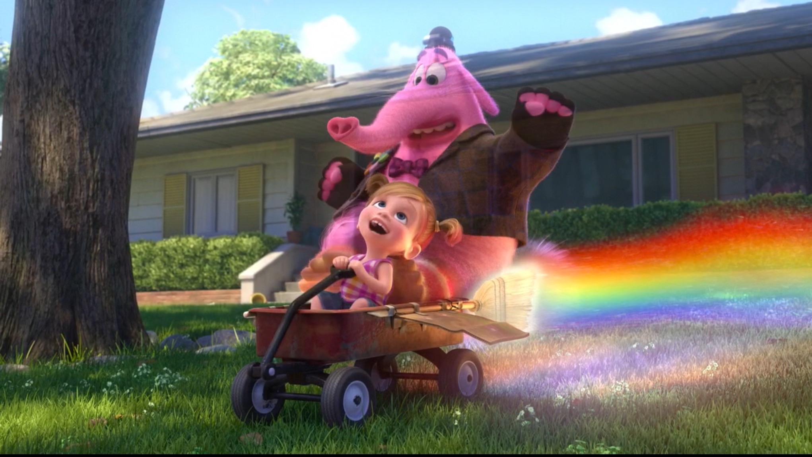

About Bing Bong
Bing Bong was Riley's adorable imaginary friend created during her early childhood.
Bing Bong and Riley
Bing Bong's Characteristics
- He is Pink
- He is Helpful
- He is Lonley
Bing Bong's Friends
Bing Bong has lots of friends in Riley's memory. His best friends are Joy and Sadness. Click on the links below to read more about them: